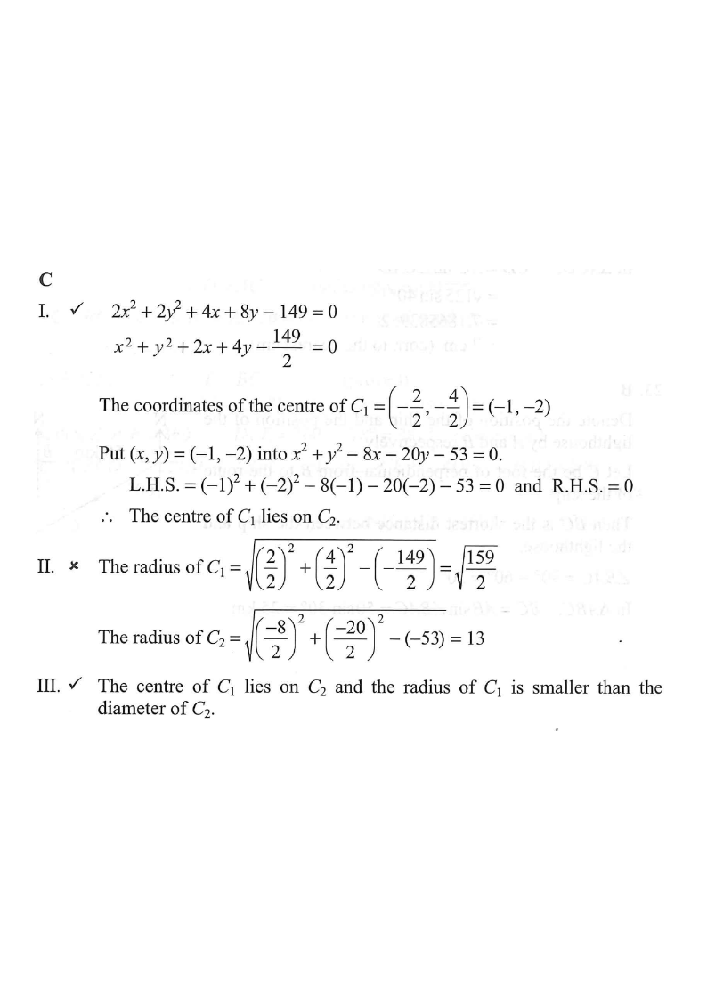

The equations of the circles \(C_1\) and \(C_2\) are
$$2x^2+2y^2+4x+8y-149=0 \quad\text{and}\quad x^2+y^2-8x-20y-53=0$$
respectively. Which of the following are true?
I. The centre of \(C_1\) lies on \(C_2\).
II. The radii of \(C_1\) and \(C_2\) are equal.
III. \(C_1\) and \(C_2\) intersect at two distinct points.

For \(x^2+y^2-8x-20y-53=0\), compare with \(x^2+y^2+Dx+Ey+F=0\):
$$O_2=\left(-\frac{D}{2},-\frac{E}{2}\right)=\left(4,\,10\right)$$
$$r_2=\sqrt{\left(\frac{4}{2}\right)^2+\left(\frac{10}{2}\right)^2-(-53)}=\sqrt{4+25+53}=\sqrt{82}$$
For \(2x^2+2y^2+4x+8y-149=0\), divide throughout by \(2\):
$$x^2+y^2+2x+4y-\frac{149}{2}=0$$
$$O_1=\left(-\frac{2}{2},-\frac{4}{2}\right)=(-1,\,-2)$$
$$r_1=\sqrt{\left(\frac{2}{2}\right)^2+\left(\frac{4}{2}\right)^2-\left(-\frac{149}{2}\right)}=\sqrt{1+4+\frac{149}{2}}=\sqrt{79.5}\approx 8.92$$
Substitute \(O_1(-1,-2)\) into \(C_2:\;x^2+y^2-8x-20y-53\):
$$\text{LHS}=(-1)^2+(-2)^2-8(-1)-20(-2)-53$$
$$=1+4+8+40-53=0=\text{RHS}$$
✔ Statement I is TRUE — the centre of \(C_1\) lies on \(C_2\).
From Steps 1 & 2:
$$r_2=\sqrt{82}\approx 9.06,\qquad r_1=\sqrt{79.5}\approx 8.92$$
\(r_1 \neq r_2\).
✘ Statement II is FALSE — the radii are not equal.
Distance between the centres:
$$d=O_1O_2=\sqrt{(4-(-1))^2+(10-(-2))^2}=\sqrt{25+144}=\sqrt{169}=13$$
Since \(O_1(-1,-2)\) lies on \(C_2\), \(d=r_2\) — the circles touch internally? No: \(O_1\) is the centre of \(C_1\), so \(O_1\) lies inside \(C_2\). Check:
\(d=13,\; r_2\approx 9.06\;\Rightarrow\; d>r_2\)?? Let's recompute: \(|O_1O_2|=\sqrt{5^2+12^2}=13\).
Compare: \(r_2\approx 9.06\). Then \(d>r_2+r_1\approx 9.06+8.92=17.98\)? No, \(13<17.98\).
And \(d>|r_2-r_1|\approx 0.14\). Since \(|r_2-r_1|
✔ Statement III is TRUE.